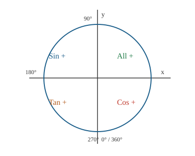
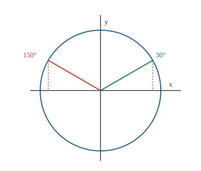

<script src="/assets/redirect.js"></script>
<section class="theory" data-section="IGCSE-15.6">
<h2>15.6 Sines, cosines and tangents of angles greater than 90°</h2>
<p class="src">Based on Cambridge IGCSE Mathematics Core &amp; Extended Coursebook, Chapter 15, printed pp.505–509 (quadrants, related angles, and solving sine, cosine and tangent equations for 0° to 360°). Printed pages were read from the coursebook scans (printed 505–509). Own wording and new numbers.</p>
<p class="key-words"><strong>Key words:</strong> <em>related angle</em></p>
<p>Sine, cosine and tangent are defined for angles greater than \(90^\circ\) by the coordinates of a point on the unit circle. Between \(0^\circ\) and \(360^\circ\) the signs follow a pattern: all three ratios are positive in the first quadrant, sine is also positive in the second, tangent in the third, and cosine in the fourth.</p>
<figure>

<figcaption>The sign of each ratio in a given quadrant, together with a related angle, determines the solutions of a trigonometric equation in the interval from \(0^\circ\) to \(360^\circ\).</figcaption>
</figure>
<p>The <strong>related angle</strong> is the acute angle that has the same sine, or the same cosine, or the same tangent, in absolute value, as a given angle. For example, \(\sin 150^\circ=\sin 30^\circ=1/2\), because \(150^\circ\) is in the second quadrant and its related angle is \(30^\circ\).</p>
<figure>

<figcaption>The vertical heights from the unit-circle points at \(30^\circ\) and \(150^\circ\) are equal, so the sines are equal.</figcaption>
</figure>
<div class="worked-example">
<h4>Worked example 1</h4>
<p class="src">Book: related-angle work on printed pp.505–507. New numbers.</p>
<p>Write down the exact value of \(\cos 120^\circ\).</p>
<ol class="steps">
<li>\(120^\circ\) is in the second quadrant, where cosine is negative, and the related angle is \(60^\circ\), so \(\cos 120^\circ=-\cos 60^\circ=-1/2\). <span class="mark">A1</span></li>
</ol>
<p class="final"><strong>Answer:</strong> \(-1/2\)</p>
</div>
<div class="worked-example">
<h4>Worked example 2</h4>
<p class="src">Book: solving in the interval 0 to 360 on printed pp.507–509. New numbers matching the style of the official paper later in this section.</p>
<p>Solve \(\tan x=\sqrt{3}\) for \(0^\circ\leqslant x\leqslant 360^\circ\).</p>
<ol class="steps">
<li>The related angle is \(60^\circ\), because \(\tan 60^\circ=\sqrt{3}\). <span class="mark">B1</span></li>
<li>Tangent is positive in the first and third quadrants, so \(x=60^\circ\) or \(x=180^\circ+60^\circ=240^\circ\). <span class="mark">B1</span></li>
</ol>
<p class="final"><strong>Answer:</strong> \(60^\circ\), \(240^\circ\)</p>
</div>
<h3>Common mistakes</h3>
<ul>
<li>Finding only the acute solution and missing the second angle in the interval from \(0^\circ\) to \(360^\circ\).</li>
<li>Using the wrong quadrant for the sign, for example taking cosine to be positive in the second quadrant.</li>
<li>Adding \(180^\circ\) to the related angle when solving a sine equation (sine uses \(180^\circ\) minus the related angle in the second quadrant, and \(360^\circ\) minus the related angle in the fourth).</li>
</ul>
<h3>Quick checks</h3>
<div class="quick-check" data-q="QC1">
<h4>Quick check 1</h4>
<p>What is the value of \(10\sin 150^\circ\)?</p>
<details><summary>Worked solution</summary>
<ol class="steps">
<li>\(\sin 150^\circ=\sin 30^\circ=1/2\), so \(10\times 1/2=5\). <span class="mark">A1</span></li>
</ol>
<p class="final"><strong>Answer:</strong> \(5\)</p>
</details>
</div><div class="quick-check" data-q="QC2">
<h4>Quick check 2</h4>
<p>Find the obtuse angle, in degrees, whose sine is equal to \(\sin 30^\circ\).</p>
<details><summary>Worked solution</summary>
<ol class="steps">
<li>Sine is also positive in the second quadrant, so the obtuse angle is \(180^\circ-30^\circ=150^\circ\). <span class="mark">A1</span></li>
</ol>
<p class="final"><strong>Answer:</strong> \(150^\circ\)</p>
</details>
</div><div class="quick-check" data-q="QC3">
<h4>Quick check 3</h4>
<p>What is the value of \(8\cos 120^\circ\)?</p>
<details><summary>Worked solution</summary>
<ol class="steps">
<li>\(\cos 120^\circ=-\cos 60^\circ=-1/2\), so \(8\times(-1/2)=-4\). <span class="mark">A1</span></li>
</ol>
<p class="final"><strong>Answer:</strong> \(-4\)</p>
</details>
</div>
</section>
